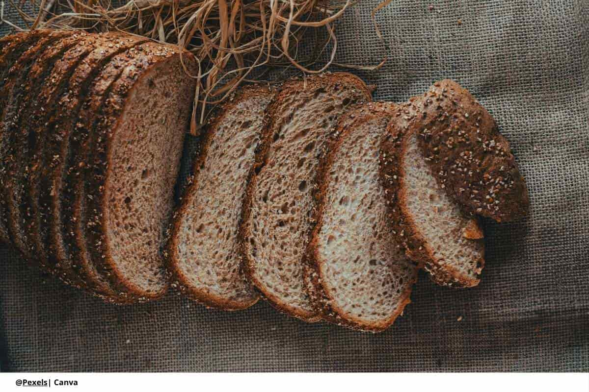
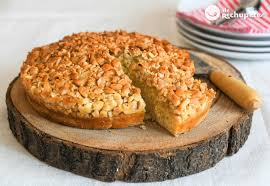

Pan rústico sin gluten
Pan artesanal fermentado, corteza crujiente y miga suave — ideal para sándwiches o tostadas.

Somos una panadería artesanal especializada en productos de panaderia con opciones fitness: panes, muffins, tortas y snacks pensados para alimentar con sabor y bienestar.
Ingredientes 100% seleccionados, procesos de des-cross-contaminación y control de calidad en cada tanda.
Panadería Delicias del Trigo nace de la necesidad de ofrecer alternativas deliciosas y seguras para quienes requieren o prefieren una dieta con técnicas tradicionales y amor por lo artesanal. Mezclamos tradición panadera con técnicas modernas para lograr texturas y sabores excepcionales.
Pan artesanal fermentado, corteza crujiente y miga suave — ideal para sándwiches o tostadas.

Muffins integrales sin gluten con avena, plátano y proteína vegetal.
Torta esponjosa con harina de almendra y relleno ligero de frutas.

Trabajamos con prácticas de cross-check, trazabilidad de lotes y proveedores certificados.

"Deliciosos y seguros para mi dieta. La textura del pan me sorprendió."

"Muy buen servicio y las opciones fitness son geniales para mis entrenamientos."

"La torta de almendra fue un éxito en la reunión. Sabor y textura perfectos."